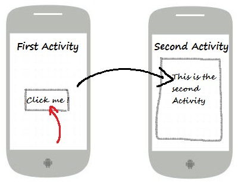
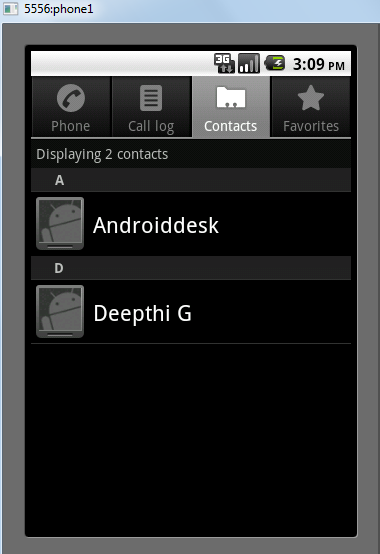
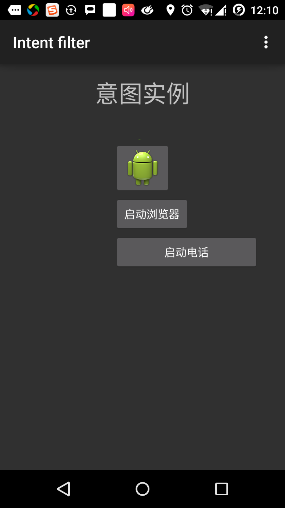
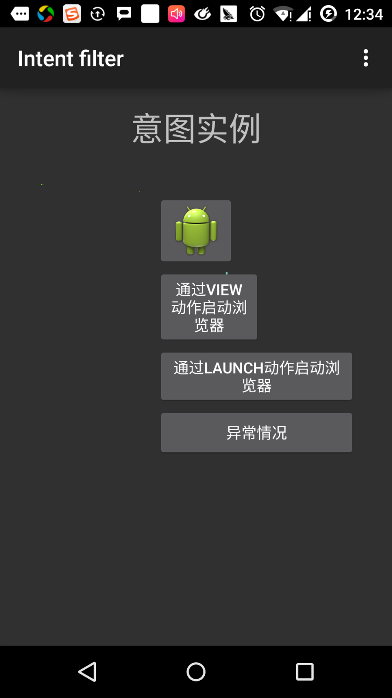
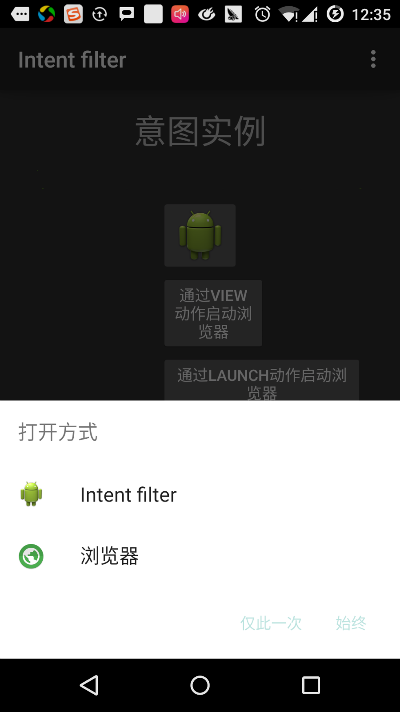
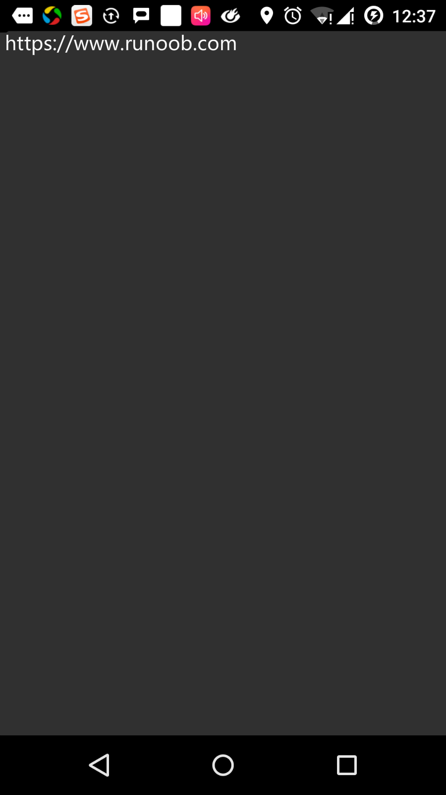

Android 意图(Intent)和过滤器(Filter)
Android意图是一个要执行的操作的抽象描述。它可以通过 startActivity 来启动一个活动，broadcastIntent 来发送广播到任何对它感兴趣的广播接受器组件，startService(Intent) 或者bindService(Intent， ServiceConnection, int) 来与后台服务通讯。
意图本身（一个 Intent 对象）是一个被动的数据结构，保存着要执行操作的抽象描述。
例如，你有一个活动，需要打开邮件客户端并通过 Android 设备来发送邮件。为了这个目的，你的活动需要发送一个带有合适选择器的 ACTION_SEND 到 Android 意图处理者。指定的选择器给定合适的界面来让用户决定如何发送他的邮件数据。
Intent email = new Intent(Intent.ACTION_SEND, Uri.parse("mailto:"));
email.putExtra(Intent.EXTRA_EMAIL, recipients);
email.putExtra(Intent.EXTRA_SUBJECT, subject.getText().toString());
email.putExtra(Intent.EXTRA_TEXT, body.getText().toString());
startActivity(Intent.createChooser(email, "Choose an email client from..."));
上面的语法调用 startActivity 方法来开启邮件活动，代码运行结果看起来像这样：

例如，你有一个活动，需要在 Android 设备上通过浏览器打开一个URL。为了这个目的，你的活动发送 ACTION_WEB_SEARCH 意图到 Android 意图处理器来在浏览器中打开给定的 URL 。意图处理器通过解析一系列活动，并选择最适合你的意图的一个活动，在这个例子中，是 Web 浏览器活动。意图处理器传递你的网页地址到 Web 浏览器，并打开 Web 浏览器活动。
String q = "https://www.runoob.com"; Intent intent = new Intent(Intent.ACTION_WEB_SEARCH ); intent.putExtra(SearchManager.QUERY, q); startActivity(intent);
上面的例子将在Android搜索引擎上查找"www.runoob.com"，并在一个活动上给出关键词的结果。
对于每一个组件-活动，服务，广播接收器都有独立的机制来传递意图。
| 序号 | 方法和描述 |
|---|---|
| 1 | Context.startActivity():意图传递给该方法，用于启动一个新的活动或者让已存在的活动做一些新的事情。 |
| 2 | Context.startService():意图传递给该方法，将初始化一个服务，或者新的信息到一个持续存在的服务。 |
| 3 | Context.sendBroadcast():意图传递给该方法，信息将传递到所有对此感兴趣的广播接收器。 |
意图对象
意图对象是一包的信息，用于组件接收到的意图就像 Android 系统接受到的信息。
意图对象包括如下的组件，具体取决于要通信或者执行什么。
动作(Action)
这是意图对象中必须的部分，被表现为一个字符串。在广播的意图中，动作一旦发生，将会被报告。动作将很大程度上决定意图的其他部分如何被组织。Intent 类定义了一系列动作常量对应不同的意图。这里是一份Android意图标准动作 列表。
意图对象中的动作可以通过 setAction() 方法来设置，通过 getAction() 方法来读取。
数据(Data)
添加数据规格到意图过滤器。这个规格可以只是一个数据类型(如元类型属性)，一条 URI ，或者同时包括数据类型和 URI 。 URI 则由不同部分的属性来指定。
这些指定 URL 格式的属性是可选的，但是也相互独立 -
- 如果意图过滤器没有指定模式，所有其他的 URI 属性将被忽略。
- 如果没有为过滤器指定主机，端口属性和所有路径属性将被忽略。
setData() 方法只能以 URI 来指定数据，setType() 只能以元类型指定数据，setDataAndType() 可以同时指定 URI 和元类型。URI 通过 getData() 读取，类型通过 getType() 读取。
以下是动作/数据组的一些实例 -
| 序号 | 动作/数据组和描述 |
|---|---|
| 1 | ACTION_VIEW content://contacts/people/1：显示ID为1的用户的信息。 |
| 2 | ACTION_DIAL content://contacts/people/1：显示电话拨号器，并填充用户1的数据。 |
| 3 | ACTION_VIEW tel:123：显示电话拨号器，并填充给定的号码。 |
| 4 | ACTION_DIAL tel:123：显示电话拨号器，并填充给定的号码。 |
| 5 | ACTION_EDIT content://contacts/people/1：编辑ID为1的用户信息。 |
| 6 | ACTION_VIEW content://contacts/people/：显示用户列表，以便查看。 |
| 7 | ACTION_SET_WALLPAPER：显示选择壁纸设置。 |
| 8 | ACTION_SYNC：同步数据，默认的值为：android.intent.action.SYNC |
| 9 | ACTION_SYSTEM_TUTORIAL：开启平台定义的教程（默认教程或者启动教程） |
| 10 | ACTION_TIMEZONE_CHANGED：当时区被改变时通知 |
| 11 | ACTION_UNINSTALL_PACKAGE：运行默认的卸载器 |
类别
类别是意图中可选的部分，是一个字符串，包含该类型组件需要处理的意图的附加信息。addCategory() 方法为意图对象添加类别，removeCategory() 方法删除之前添加的类别，getCategories() 获取所有被设置到意图对象中的类别。这里是Android意图标准类别列表。
可以查看下面章节中的意图过滤器来了解我们如何使用类别来通过对应的意图选择合适的活动。
附加数据
这是传递给需要处理意图的组件的以键值对描述的附加信息。通过 putExtras() 方法设置，getExtras() 方法读取。这里是Android意图标准附加数据列表。
标记
这些标记是意图的可选部分，说明Android系统如何来启动活动，启动后如何处理等。
| 序号 | 标记和说明 |
|---|---|
| 1 | FLAG_ACTIVITY_CLEAR_TASK :如果在意图中设置，并通过 Context.startActivity 传递，这个标记将导致与该活动相关联的所有已存在的任务在活动启动前被清空。活动将成为一个空任务的根，所有旧的活动被结束。该标记可以与 FLAG_ACTIVITY_NEW_TASK 结合使用。 |
| 2 | FLAG_ACTIVITY_CLEAR_TOP :如果设置该标记，活动将在当前运行的任务中被启动。这并不会启动一个新的活动实例，所有的在它之上的活动被关闭，这个意图作为一个新的意图被传递到已有的（目前在顶部的）活动。 |
| 3 | FLAG_ACTIVITY_NEW_TASK :这个标记一般用于使得活动用于"启动器"风格的行为：为用户提供一个可以独立完成运行的数据，并启动完整儿独立的活动。 |
组件名称
组件名称对象是一个可选的域，代表活动、服务或者广播接收器类。如果设置，则意图对象被传递到实现设计好的类的实例，否则，Android 使用其他意图中的其他信息来定位一个合适的目标。组件名称通过 setComponent()，setClass()或者 setClassName() 来设置，通过 getComponent() 获取。
意图的类型
Android 支持两种类型的意图。

显式意图
显式意图用于连接应用程序的内部世界，假设你需要连接一个活动到另外一个活动，我们可以通过显示意图，下图显示通过点击按钮连接第一个活动到第二个活动。

这些意图通过名称指定目标组件，一般用于应用程序内部信息 - 比如一个活动启动一个下属活动或者启动一个兄弟活动。举个例子：
// 通过指定类名的显式意图 Intent i = new Intent(FirstActivity.this, SecondAcitivity.class); // 启动目标活动 startActivity(i);
隐式意图
这些意图没有为目标命名，组件名称的域为空。隐式意图经常用于激活其他应用程序的组件。举个例子：
Intent read1=new Intent(); read1.setAction(android.content.Intent.ACTION_VIEW); read1.setData(ContactsContract.Contacts.CONTENT_URI); startActivity(read1);
上面的代码将给出如下结果：

目标组件接收到意图，可以使用getExtras()方法来获取由源组件发送的附加数据。例如：
// 在代码中的合适位置获取包对象
Bundle extras = getIntent().getExtras();
// 通过键解压数据
String value1 = extras.getString("Key1");
String value2 = extras.getString("Key2");
实例
下面的实例演示使用 Android 意图来启动各种 Android 内置应用程序的功能。
| 步骤 | 描述 |
|---|---|
| 1 | 使用 Android Studio IDE 创建 Android 应用程序，并命名为Intent filter，包名为 com.runoob.intentfilter。当创建项目时，确保目标 SDK 和用最新版本的 Android SDK 进行编译使用高级的API。 |
| 2 | 修改src/com.runoob.intentfilter/MainActivity.java文件，并添加代码定义两个监听器来对应两个按钮"启动浏览器"和"启动电话" |
| 3 | 修改res/layout/activity_main.xml布局文件，在线性布局中添加3个按钮。 |
| 4 | 启动Android模拟器来运行应用程序，并验证应用程序所做改变的结果。 |
以下是src/com.runoob.intentfilter/MainActivity.java文件的内容：
package com.runoob.intentfilter;
import android.content.Intent;
import android.net.Uri;
import android.support.v7.app.ActionBarActivity;
import android.os.Bundle;
import android.view.Menu;
import android.view.MenuItem;
import android.view.View;
import android.widget.Button;
public class MainActivity extends ActionBarActivity {
Button b1,b2;
@Override
protected void onCreate(Bundle savedInstanceState) {
super.onCreate(savedInstanceState);
setContentView(R.layout.activity_main);
b1=(Button)findViewById(R.id.button);
b1.setOnClickListener(new View.OnClickListener() {
@Override
public void onClick(View v) {
Intent i = new Intent(android.content.Intent.ACTION_VIEW, Uri.parse("https://www.runoob.com"));
startActivity(i);
}
});
b2=(Button)findViewById(R.id.button2);
b2.setOnClickListener(new View.OnClickListener() {
@Override
public void onClick(View v) {
Intent i = new Intent(android.content.Intent.ACTION_VIEW,Uri.parse("tel:9510300000"));
startActivity(i);
}
});
}
@Override
public boolean onCreateOptionsMenu(Menu menu) {
getMenuInflater().inflate(R.menu.menu_main, menu);
return true;
}
@Override
public boolean onOptionsItemSelected(MenuItem item) {
// Handle action bar item clicks here. The action bar will
// automatically handle clicks on the Home/Up button, so long
// as you specify a parent activity in AndroidManifest.xml.
int id = item.getItemId();
//noinspection SimplifiableIfStatement
if (id == R.id.action_settings) {
return true;
}
return super.onOptionsItemSelected(item);
}
}
下面是res/layout/activity_main.xml文件的内容：
<RelativeLayout xmlns:android="http://schemas.android.com/apk/res/android"
xmlns:tools="http://schemas.android.com/tools"
android:layout_width="match_parent"
android:layout_height="match_parent"
android:paddingLeft="@dimen/activity_horizontal_margin"
android:paddingRight="@dimen/activity_horizontal_margin"
android:paddingTop="@dimen/activity_vertical_margin"
android:paddingBottom="@dimen/activity_vertical_margin"
tools:context=".MainActivity">
<TextView
android:id="@+id/textView1"
android:layout_width="wrap_content"
android:layout_height="wrap_content"
android:text="意图实例"
android:layout_alignParentTop="true"
android:layout_centerHorizontal="true"
android:textSize="30dp" />
<TextView
android:id="@+id/textView2"
android:layout_width="wrap_content"
android:layout_height="wrap_content"
android:text="www.runoob.com"
android:textColor="#ff87ff09"
android:textSize="30dp"
android:layout_below="@+id/textView1"
android:layout_centerHorizontal="true" />
<ImageButton
android:layout_width="wrap_content"
android:layout_height="wrap_content"
android:id="@+id/imageButton"
android:src="@drawable/ic_launcher"
android:layout_below="@+id/textView2"
android:layout_centerHorizontal="true" />
<EditText
android:layout_width="wrap_content"
android:layout_height="wrap_content"
android:id="@+id/editText"
android:layout_below="@+id/imageButton"
android:layout_alignRight="@+id/imageButton"
android:layout_alignEnd="@+id/imageButton" />
<Button
android:layout_width="wrap_content"
android:layout_height="wrap_content"
android:text="启动浏览器"
android:id="@+id/button"
android:layout_alignTop="@+id/editText"
android:layout_alignRight="@+id/textView1"
android:layout_alignEnd="@+id/textView1"
android:layout_alignLeft="@+id/imageButton"
android:layout_alignStart="@+id/imageButton" />
<Button
android:layout_width="wrap_content"
android:layout_height="wrap_content"
android:text="启动电话"
android:id="@+id/button2"
android:layout_below="@+id/button"
android:layout_alignLeft="@+id/button"
android:layout_alignStart="@+id/button"
android:layout_alignRight="@+id/textView2"
android:layout_alignEnd="@+id/textView2" />
</RelativeLayout>
下面是res/values/strings/xml的内容，定义了两个新的常量。
<?xml version="1.0" encoding="utf-8"?> <resources> <string name="app_name">Intent filter</string> <string name="action_settings">Settings</string> </resources>
下面是默认的AndroidManifest.xml的内容：
<?xml version="1.0" encoding="utf-8"?>
<manifest xmlns:android="http://schemas.android.com/apk/res/android"
package="com.runoob.intentfilter"
android:versionCode="1"
android:versionName="1.0" >
<uses-sdk
android:minSdkVersion="8"
android:targetSdkVersion="22" />
<application
android:allowBackup="true"
android:icon="@drawable/ic_launcher"
android:label="@string/app_name"
android:theme="@style/Base.Theme.AppCompat" >
<activity
android:name="com.runoob.intentfilter.MainActivity"
android:label="@string/app_name" >
<intent-filter>
<action android:name="android.intent.action.MAIN" />
<category android:name="android.intent.category.LAUNCHER" />
</intent-filter>
</activity>
</application>
</manifest>
让我们运行刚刚修改的 Intent filter 应用程序。我假设你已经在安装环境时创建了 AVD。打开你的项目中的活动文件，点击工具栏中的 图标来在 Android Studio 中运行应用程序。Android Studio 在 AVD 上安装应用程序并启动它。如果一切顺利，将在模拟器窗口上显示如下：
图标来在 Android Studio 中运行应用程序。Android Studio 在 AVD 上安装应用程序并启动它。如果一切顺利，将在模拟器窗口上显示如下：

现在点击"启动浏览器"按钮，这将根据配置启动一个浏览器，并且显示https://www.runoob.com如下：

类似的方式，你可以点击"启动电话"按钮来打开电话界面，这将允许你拨打已经给定的电话号码。
意图过滤器
你已经看到如何使用意图来调用另外的活动。 Android 操作系统使用过滤器来指定一系列活动、服务和广播接收器处理意图，需要借助于意图所指定的动作、类别、数据模式。在 manifest 文件中使用 <intent-filter> 元素在活动，服务和广播接收器中列出对应的动作，类别和数据类型。
下面的实例展示AndroidManifest.xml文件的一部分，指定一个活动com.runoob.intentfilter.CustomActivity可以通过设置的动作，类别及数据来调用：
<activity android:name=".CustomActivity"
android:label="@string/app_name">
<intent-filter>
<action android:name="android.intent.action.VIEW" />
<action android:name="com.example.MyApplication.LAUNCH" />
<category android:name="android.intent.category.DEFAULT" />
<data android:scheme="http" />
</intent-filter>
</activity>
当活动被上面的过滤器所定义，其他活动就可以通过下面的方式来调用这个活动。使用 android.intent.action.VIEW，使用 com.runoob.intentfilter.LAUNCH 动作，并提供android.intent.category.DEFAULT类别。
元素指定要被调用的活动所期望的数据类型。上面的实例中，自定义活动期望的数据由"http://"开头。
有这样的情况，通过过滤器，意图将被传递到多个的活动或者服务，用户将被询问启动哪个组件。如果没有找到目标组件，将发生一个异常。
在调用活动之前，有一系列的 Android 检查测试：
- 过滤器 <intent-filter> 需要列出一个或者多个的动作，不能为空；过滤器至少包含一个
元素，否则将阻塞所有的意图。如果多个动作被提到，Android 在调用活动前尝试匹配其中提到的一个动作。 - 过滤器 <intent-filter> 可能列出0个，1个或者多个类别。如果没有类别被提到，Android 通过这个测试，如果有多个类别被提及，意图通过类型测试，每个意图对象的分类必须匹配过滤器中的一个分类。
- 每个 元素可以指定一个 URI 和一个数据类型(元媒体类型)。这里有独立的属性，如 URI 中的每个部分：模式，主机，端口和路径。意图包含有 URI 和类型，只有它的类型匹配了过滤器中列出的某个类型，则通过数据类型部分的测试。
实例
下面的实例是上面实例的一些修改。这里我们将看到如果一个意图调用定义的两个活动，Android 如何来解决冲突；如何使用过滤器来调用自定义活动；如果没有为意图定义合适的活动，则会出现异常。
| 步骤 | 说明 |
|---|---|
| 1 | 使用Android Studio IDE创建Android应用程序，并命名为Intent filter，包名为com.runoob.intentfilter。当创建项目时，确保目标 SDK 和用最新版本的 Android SDK 进行编译使用高级的API。 |
| 2 | 修改 src/com.runoob.intentfilter/MainActivity.java 文件，添加代码来定义三个监听器来对应布局文件中定义的三个按钮。 |
| 3 | 添加 src/com.runoob.intentfilter/CustomActivity.java 文件来包含一个活动，可以被不同的意图调用。 |
| 4 | 修改 res/layout/activity_main.xml 文件在线性布局中添加三个按钮。 |
| 5 | 添加 res/lauout/custom_view.xml 布局文件，添加简单地 |
| 6 | 修改 AndroidManifest.xml 文件，添加 <intent-filter> 定义意图的规则来调用自定义活动。 |
| 7 | 启动 Android 模拟器来运行应用程序，并验证应用程序所做改变的结果。 |
以下是src/com.runoob.intentfilter/MainActivity.java的内容：
package com.runoob.intentfilter;
import android.content.Intent;
import android.net.Uri;
import android.support.v7.app.ActionBarActivity;
import android.os.Bundle;
import android.view.Menu;
import android.view.MenuItem;
import android.view.View;
import android.widget.Button;
public class MainActivity extends ActionBarActivity {
Button b1,b2,b3;
@Override
protected void onCreate(Bundle savedInstanceState) {
super.onCreate(savedInstanceState);
setContentView(R.layout.activity_main);
b1=(Button)findViewById(R.id.button);
b1.setOnClickListener(new View.OnClickListener() {
@Override
public void onClick(View v) {
Intent i = new Intent(android.content.Intent.ACTION_VIEW,Uri.parse("https://www.runoob.com"));
startActivity(i);
}
});
b2=(Button)findViewById(R.id.button2);
b2.setOnClickListener(new View.OnClickListener() {
@Override
public void onClick(View v) {
Intent i = new Intent("com.runoob.intentfilter.LAUNCH",Uri.parse("https://www.runoob.com"));
startActivity(i);
}
});
b3=(Button)findViewById(R.id.button3);
b3.setOnClickListener(new View.OnClickListener() {
@Override
public void onClick(View v) {
Intent i = new Intent("com.runoob.intentfilter.LAUNCH",Uri.parse("https://www.runoob.com"));
startActivity(i);
}
});
}
@Override
public boolean onCreateOptionsMenu(Menu menu) {
// Inflate the menu; this adds items to the action bar if it is present.
getMenuInflater().inflate(R.menu.menu_main, menu);
return true;
}
@Override
public boolean onOptionsItemSelected(MenuItem item) {
// Handle action bar item clicks here. The action bar will
// automatically handle clicks on the Home/Up button, so long
// as you specify a parent activity in AndroidManifest.xml.
int id = item.getItemId();
//noinspection SimplifiableIfStatement
if (id == R.id.action_settings) {
return true;
}
return super.onOptionsItemSelected(item);
}
}
下面是src/com.runoob.intentfilter/CustomActivity.java的内容：
package com.runoob.intentfilter;
import android.app.Activity;
import android.net.Uri;
import android.os.Bundle;
import android.widget.TextView;
public class CustomActivity extends Activity {
@Override
public void onCreate(Bundle savedInstanceState) {
super.onCreate(savedInstanceState);
setContentView(R.layout.custom_view);
TextView label = (TextView) findViewById(R.id.show_data);
Uri url = getIntent().getData();
label.setText(url.toString());
}
}
下面是res/layout/activity_main.xml 的内容：
<RelativeLayout xmlns:android="http://schemas.android.com/apk/res/android"
xmlns:tools="http://schemas.android.com/tools"
android:layout_width="match_parent"
android:layout_height="match_parent"
android:paddingLeft="@dimen/activity_horizontal_margin"
android:paddingRight="@dimen/activity_horizontal_margin"
android:paddingTop="@dimen/activity_vertical_margin"
android:paddingBottom="@dimen/activity_vertical_margin"
tools:context=".MainActivity">
<TextView
android:id="@+id/textView1"
android:layout_width="wrap_content"
android:layout_height="wrap_content"
android:text="意图实例"
android:layout_alignParentTop="true"
android:layout_centerHorizontal="true"
android:textSize="30dp" />
<TextView
android:id="@+id/textView2"
android:layout_width="wrap_content"
android:layout_height="wrap_content"
android:text="www.runoob.com"
android:textColor="#ff87ff09"
android:textSize="30dp"
android:layout_below="@+id/textView1"
android:layout_centerHorizontal="true" />
<ImageButton
android:layout_width="wrap_content"
android:layout_height="wrap_content"
android:id="@+id/imageButton"
android:src="@drawable/ic_launcher"
android:layout_below="@+id/textView2"
android:layout_centerHorizontal="true" />
<EditText
android:layout_width="wrap_content"
android:layout_height="wrap_content"
android:id="@+id/editText"
android:layout_below="@+id/imageButton"
android:layout_alignRight="@+id/imageButton"
android:layout_alignEnd="@+id/imageButton" />
<Button
android:layout_width="wrap_content"
android:layout_height="wrap_content"
android:text="通过View动作启动浏览器"
android:id="@+id/button"
android:layout_alignTop="@+id/editText"
android:layout_alignRight="@+id/textView1"
android:layout_alignEnd="@+id/textView1"
android:layout_alignLeft="@+id/imageButton"
android:layout_alignStart="@+id/imageButton" />
<Button
android:layout_width="wrap_content"
android:layout_height="wrap_content"
android:text="通过Launch动作启动浏览器"
android:id="@+id/button2"
android:layout_below="@+id/button"
android:layout_alignLeft="@+id/button"
android:layout_alignStart="@+id/button"
android:layout_alignRight="@+id/textView2"
android:layout_alignEnd="@+id/textView2" />
<Button
android:layout_width="wrap_content"
android:layout_height="wrap_content"
android:text="异常情况"
android:id="@+id/button3"
android:layout_below="@+id/button2"
android:layout_alignLeft="@+id/button2"
android:layout_alignStart="@+id/button2"
android:layout_alignRight="@+id/textView2"
android:layout_alignEnd="@+id/textView2" />
</RelativeLayout>
下面是res/layout/custom_view.xml文件的内容：
<?xml version="1.0" encoding="utf-8"?>
<LinearLayout xmlns:android="http://schemas.android.com/apk/res/android"
android:orientation="vertical"
android:layout_width="fill_parent"
android:layout_height="fill_parent">
<TextView android:id="@+id/show_data"
android:layout_width="fill_parent"
android:layout_height="400dp"/>
</LinearLayout>
下面是res/values/strings.xml文件的内容：
<?xml version="1.0" encoding="utf-8"?> <resources> <string name="app_name">My Application</string> <string name="action_settings">Settings</string> </resources>
下面是AndroidManifest.xml文件的内容：
<?xml version="1.0" encoding="utf-8"?>
<manifest xmlns:android="http://schemas.android.com/apk/res/android"
package="com.runoob.intentfilter"
android:versionCode="1"
android:versionName="1.0" >
<uses-sdk
android:minSdkVersion="8"
android:targetSdkVersion="22" />
<application
android:allowBackup="true"
android:icon="@drawable/ic_launcher"
android:label="@string/app_name"
android:theme="@style/Base.Theme.AppCompat" >
<activity
android:name="com.runoob.intentfilter.MainActivity"
android:label="@string/app_name" >
<intent-filter>
<action android:name="android.intent.action.MAIN" />
<category android:name="android.intent.category.LAUNCHER" />
</intent-filter>
</activity>
<activity android:name="com.runoob.intentfilter.CustomActivity"
android:label="@string/app_name">
<intent-filter>
<action android:name="android.intent.action.VIEW" />
<action android:name="com.runoob.intentfilter.LAUNCH" />
<category android:name="android.intent.category.DEFAULT" />
<data android:scheme="http" />
</intent-filter>
</activity>
</application>
</manifest>
让我们运行刚刚修改的 Intent filter 应用程序。我假设你已经在安装环境时创建了 AVD 。打开你的项目中的活动文件，点击工具栏中的图标来在 Android Studio 中运行应用程序。 Android Studio 在 AVD 上安装应用程序并启动它。如果一切顺利，将在模拟器窗口上显示如下：

点击第一个按钮"使用View动作启动浏览器"。这里我们定义我们自定义的活动包含"android.intent.action.VIEW"，并且 Android 系统已经定义了默认的活动来对应VIEW动作来启动Web浏览器，因此 Android 显示下面的选项来选择你想要启动的活动：

如果你选择浏览器， Android 将启动 Web 浏览器，并打开 www.runoob.com 网站。如果你选择 IntentDemo选项，Android 将启动 CustomActivity，该活动什么都没有做，仅仅是捕获并在TextView中显示传递的数据。

现在，通过返回按钮返回并点击"通过Launch动作启动浏览器"按钮，这里 Android 应用过滤器来选择定义的活动，并简单启动自定义活动。
再次使用返回按钮返回，并点击"异常条件"按钮，这里Android尝试找到一个由意图给定的有效的过滤器，但没有找到一个定义的有效的活动。因为我们使用 https 代替 http 的数据，并给定了正确的动作，一次 Android 产生了一个异常。如下：


点我分享笔记